Ниже приведён самый, пожалуй, простейший пример матриц, обладающих заявленной «странностью».
Если обозначить компоненты нашей матрицы A
следующим образом:
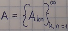, то
формула их выглядит так:
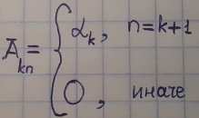*,
где 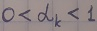 при всех k.
Интересно отметить, что в данном случае возможен аналитический вывод формулы для матрицы
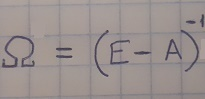
Ею может служить, к примеру, треугольная матрица
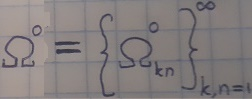**
следующего вида:
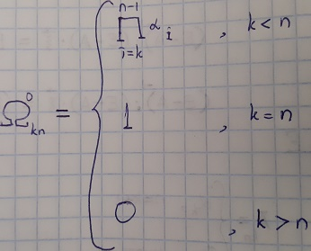***
Что же касается вектора 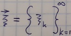 для формулы (2), то базисом линейного одномерного пространства таких векторов
является вектор
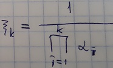
*Т. е., матрица A треугольная:
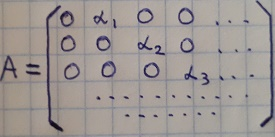
**Нолик здесь стоит по причине того, что в данном примере
существует бесконечное множество матриц Омега, удовлетворяющих
формуле (1):
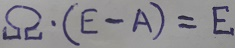
***Можно расписать и покомпонентно:
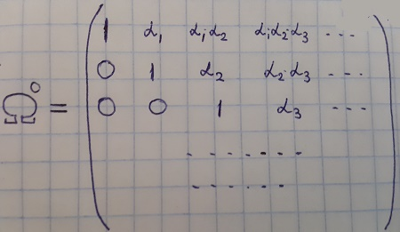